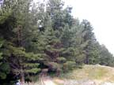
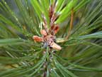
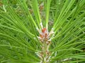
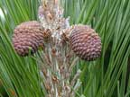
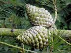

Monterey pine
Pinus radiata
Other names
radiata pine
Description
Large tree up to 60m. Older trees tend to be round topped; trees bred for timber are more conical. Needles are in clusters of three, about 15cm long. Female cones are egg shaped, asymmetrical and about 12 cm long.
Similar plants
Other pine trees. Most probably contain the same toxins.
Distribution
The most common tree in NZ, covering large parts of the North Island.
Toxin
A sample of radiata that was analysed contained a small quantitiy of isocupressic acid (ICA). As other related trees have highly variable quantities of ICA, more samples of radiata, specifically ones associated with abortion, should be analysed to establish the risk from ingestion. Radiata may also contain a mixture of abietane type acids that may cause depression, decreased appetite and death if sufficient quantities are present in the foliage. The exact mechanism of action of ICA is not known. Possibly related to binding of isocupressic acid to alpha 2 adrenergic receptors or by interfering with oestrogen metabolites causing vasoconstriction of the uterine blood supply.
Species affected
Cattle and sheep?
Clinical signs acute
Unknown if abortion and death in cattle is caused by P. radiata in NZ. Anecedotal evidence to suggest it does. Sunken eyes, lethargy, loss of condition, severe depression. Abortion may occur 1 2 weeks post ingestion of large amounts of plant. Multiple abortions in herd often occur. Foetal membranes may be retained leading to a metritis Similar clinical signs are seen in animals eating Pinus ponderosa.
Clinical signs chronic
Post mortem signs
Swelling of maternal cotyledons in aborted cows. Foetus may have leukomalacia of cerebral white matter.
Diagnosis
From history, clinical signs, post mortem findings.
Differential diagnosis
Treatment
Remove retained membranes. Antihistamines may be beneficial if given early though there is no evidence to support this. Provide symptomatic care.
Prognosis
Reasonable if no complications i.e. metritis, toxaemia are involved.
Prevention
References
Parton K, Bruere A.N. and Chambers J.P. Veterinary Clinical Toxicology, 2nd ed. 2001. Veterinary Continuing Education Publication No. 208
|  trees |
 |
|
|
 |
 |
|
|
 |
||
|
|
|
|